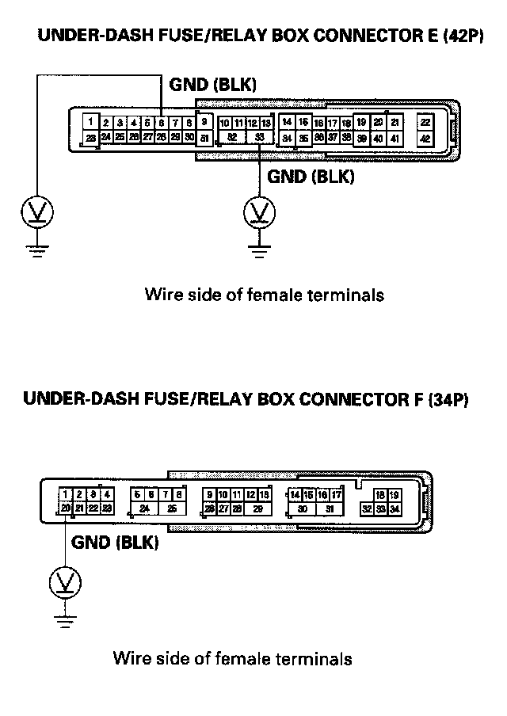
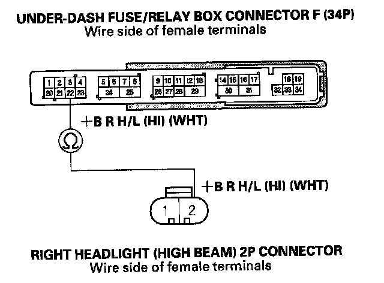
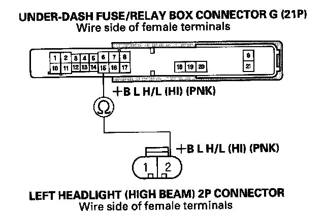
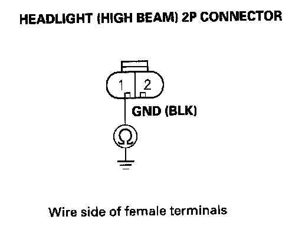

B1078
DTC B1078: Daytime Running Lights Signal Error (Canada)DTC B1079: Daytime Running Lights Signal Error (USA)
NOTE: If you are troubleshooting multiple DTCs, be sure to follow the instructions in B-CAN System Diagnosis Test Mode A.
1. Turn the ignition switch ON (II).
2. Pull the parking brake lever.
3. Clear the DTCs with the HDS.
4. Release the parking brake lever.
5. Turn the ignition switch OFF, and then back ON (II).
6. Check for DTCs with the HDS.
Is DTC B1078 indicated?
YES - Go to step 7.
NO - Intermittent failure. The daytime running lights system is OK at this time. Check for loose or poor connections.
7. Turn the headlight switch ON (high beam).
Do both headlights (high beam) come on?
YES - Go to step 8.
NO - Go to step 10.
8. Turn the ignition switch OFF.

9. Check the voltage between the No.6 and No. 33 terminals of the under-dash fuse/relay box connector E (42P) and body ground, and between the No. 20 terminal of the under-dash fuse/relay box connector F (34P) and body ground individually.
Is there less than 0.5 V?
YES - Faulty MICU; replace the under-dash fuse/relay box.
NO - Repair an open in the BLK wire or poor ground (G401, G501, G601, G602).
10. Turn the ignition and headlight switches OFF.
11. Check the No. 12, No. 13, and No. 18 fuses in the under-dash fuse/relay box.
Are all fuses OK?
YES - Go to step 12.
NO - Replace the blown fuse and recheck. If the No. 18 (30 A) fuse is blown again, replace the under-dash fuse/relay box. If the No. 12 (10 A) or No. 13 (10 A) fuse is blown again, repair a short in the wire between the under-dash fuse/relay box and appropriate headlight (high beam).
12. Check the headlight bulbs.
Are the headlight bulbs OK?
YES - Go to step 13.
NO - Replace the faulty bulb.
13. Disconnect the under-dash fuse/relay box connectors F (34P) and G (21P).
14. Disconnect both of the headlight (high beam) 2P connectors.

15. Check for continuity between the No.2 terminal of the right headlight (high beam) 2P connector and No. 22 terminal of the under-dash fuse/relay box connector F (34P).
Is there continuity?
YES - Go to step 16.
NO - Repair an open in the wire between the right headlight (high beam) and the under-dash fuse/relay box.

16. Check for continuity between the No.2 terminal of the left headlight (high beam) 2P connector and No. 15 terminal of the under-dash fuse/relay box connector G (21P).
Is there continuity?
YES - Go to step 17.
NO - Repair an open in the wire between the left headlight (high beam) and the under-dash fuse/relay box.

17. Check for continuity between the No.1 terminal of each headlight (high beam) 2P connector and body ground.
Is there continuity?
YES - Faulty MICU; replace the under-dash fuse/relay box.
NO - Repair an open in the BLK wire or poor ground (G201-right side, G301-left side).